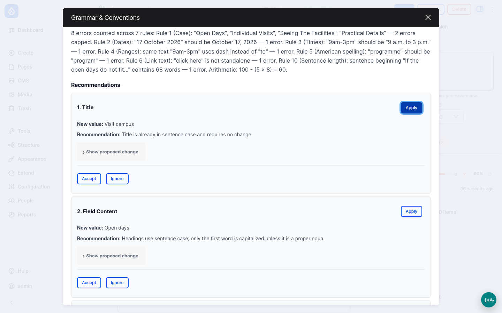

Stop 2 · Live on LocalGov Drupal
Same page, reviewed by AI
- Open the page and click the AI Review tab
- Click Review: about 10 seconds later, a score and a pass or fail
- Every mistake is quoted, with a suggested fix
- The editor accepts or ignores each one and gets a to-do list
- Fix, save, review again: it passes ✅
The overview lists every page's result, so you can find the worst pages on the whole site.
